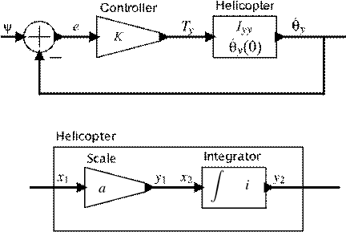

验证建模
Sanjit A. Seshia，Natasha Sharygina和Stavros Tripakis
抽象
系统建模是验证的最初步骤，也是通常至关重要的步骤。正确选择模型和建模语言对于验证工具的设计者和用户都很重要。本章旨在分四个阶段提供系统建模指南。首先，它概述了在建模系统中必须考虑的主要问题以进行验证。这些问题涉及建模语言的选择或设计以及模型创建的步骤。接下来，它介绍了一种简单的建模语言SML，用于说明选择或设计建模语言所涉及的问题。SML使用抽象状态机形式，基于过渡系统表示捕获广泛使用的语言的关键特征。我们引入了简单的建模语言来简化从业者（如Verilog，Simulink或C）使用的语言与模型检查中使用的各种基础形式（例如，自动机或Kripke结构）之间的联系。第三，本章演示了使用带有说明性示例的SML创建模型的关键步骤。最后，所提出的建模语言SML被映射到标准形式，例如Kripke结构。
3.1简介
从 广义上讲，模型可以被认为是“纸上”系统的描述，或者是“虚拟”系统。这与“真实”系统形成对比，“真实”系统可以被认为是物理人工制品：汽车，医疗设备，Java程序或股票市场。将Java程序或股票市场描述为“物理”可能看起来很奇怪; 然而，除了哲学考虑之外，大多数人都会同意这些系统具体而真实，足以直接影响我们的生活。模型也影响我们的生活，但是以更间接的方式，正如我们在下面讨论的那样。
模型的类型由其目的定义。现有系统的模型通常简称为“模型”，而尚未构建的系统模型可称为“规范”或“设计”。有些模型是使用可以解释的非正式符号编写的，而其他模型是用具有数学语义的语言编写的，被称为“正式模型”。最重要的是，模型很少捕获整个完整的系统，因为大多数系统的庞大规模和复杂性使这成为一项不可能完成的任务。因此，模型通常只关注系统的“相关”部分和/或仅关注系统的特定方面。例如，涉及硬件（HW）和软件（SW）的系统模型可能只关注SW部分; 或者模型可能只关注通信系统的逻辑方面，例如，
模特对我们的生活至关重要。他们可能一直都是。人类以及许多其他生物需要在他们的大脑中形成外部世界如何“运作”的内部表征。这些表示可以看作是模型。更接近本书的重点，工程和技术严重依赖于数学模型。实际上，设计和构建系统的任务与各种建模任务密切相关。规范模型用于在不同的工程团队之间传达系统的目标和要求。构建详细的设计模型是为了在系统构建之前估计系统的行为。这对于避免构建缺陷系统的成本和危险至关重要。系统建成后，为了操作和维护系统，模型仍然是必不可少的，
本章的目标是阐明建模系统中的关键问题，特别是形式验证，一般情况下和模型检查。由于存在许多不同类型的系统和应用领域，即使在形式验证领域内存在各种各样的问题，也存在大量的建模语言，形式和工具，以及建模技术，用途和方法。详细说明这些内容超出了本章的范围; 这样的帐户本身可能需要整本书。相反，本章有三个较为温和的目标。首先，我们试图概述在建模系统中必须考虑的主要问题以进行验证。这些问题涉及建模语言的选择或设计以及模型创建的步骤。第二，我们引入了一种简单的建模语言SML来说明选择或设计建模语言所涉及的问题。SML使用抽象状态机形式，它基于转换系统表示捕获广泛使用的语言的关键特征，并且可以用于将整个手册中引入或使用的建模语言绑定在一起。通过引入SML，我们还寻求简化从业者使用的真实语言（例如Verilog，Simulink或C）与模型检查中使用的各种基础形式（例如，自动机或Kripke结构）之间的连接。最后，本章演示了使用SML创建模型的关键步骤，其中包含来自三个不同领域的说明性示例：硬件，软件和网络物理系统。说明选择或设计建模语言所涉及的问题。SML使用抽象状态机形式，它基于转换系统表示捕获广泛使用的语言的关键特征，并且可以用于将整个手册中引入或使用的建模语言绑定在一起。通过引入SML，我们还寻求简化从业者使用的真实语言（例如Verilog，Simulink或C）与模型检查中使用的各种基础形式（例如，自动机或Kripke结构）之间的连接。最后，本章演示了使用SML创建模型的关键步骤，其中包含来自三个不同领域的说明性示例：硬件，软件和网络物理系统。说明选择或设计建模语言所涉及的问题。SML使用抽象状态机形式，它基于转换系统表示捕获广泛使用的语言的关键特征，并且可以用于将整个手册中引入或使用的建模语言绑定在一起。通过引入SML，我们还寻求简化从业者使用的真实语言（例如Verilog，Simulink或C）与模型检查中使用的各种基础形式（例如，自动机或Kripke结构）之间的连接。最后，本章演示了使用SML创建模型的关键步骤，其中包含来自三个不同领域的说明性示例：硬件，软件和网络物理系统。SML使用抽象状态机形式，它基于转换系统表示捕获广泛使用的语言的关键特征，并且可以用于将整个手册中引入或使用的建模语言绑定在一起。通过引入SML，我们还寻求简化从业者使用的真实语言（例如Verilog，Simulink或C）与模型检查中使用的各种基础形式（例如，自动机或Kripke结构）之间的连接。最后，本章演示了使用SML创建模型的关键步骤，其中包含来自三个不同领域的说明性示例：硬件，软件和网络物理系统。SML使用抽象状态机形式，它基于转换系统表示捕获广泛使用的语言的关键特征，并且可以用于将整个手册中引入或使用的建模语言绑定在一起。通过引入SML，我们还寻求简化从业者使用的真实语言（例如Verilog，Simulink或C）与模型检查中使用的各种基础形式（例如，自动机或Kripke结构）之间的连接。最后，本章演示了使用SML创建模型的关键步骤，其中包含来自三个不同领域的说明性示例：硬件，软件和网络物理系统。我们还寻求简化从业者使用的真实语言（比如Verilog，Simulink或C）与模型检查中使用的各种基本形式（例如，自动机或Kripke结构）之间的联系。最后，本章演示了使用SML创建模型的关键步骤，其中包含来自三个不同领域的说明性示例：硬件，软件和网络物理系统。我们还寻求简化从业者使用的真实语言（比如Verilog，Simulink或C）与模型检查中使用的各种基本形式（例如，自动机或Kripke结构）之间的联系。最后，本章演示了使用SML创建模型的关键步骤，其中包含来自三个不同领域的说明性示例：硬件，软件和网络物理系统。
本章中的材料至少有两个可能的受众。第一个是验证工具的用户，他们需要为正确的建模语言和验证工具做出决策，以及如何最好地对系统进行建模，以便从所选工具中获得有用的结果。第二个受众包括工具构建器谁可能想为其领域选择合适的建模结构（例如，合成生物学的工具）或者为了简化特定类问题的验证（例如，具有大数据结构的参数化系统）。在相关领域工作的研究人员，如程序综合，也可能会发现本章讨论的概念有助于更好地理解他们构建的验证技术的特征。
我们从Sect开始这一章。3.2 ，讨论在建模系统中必须考虑的主要问题以进行验证。在Sect。3.3 ，我们介绍SML，一种简单的语言，说明了正式建模语言的许多方面。Sect中提供了使用SML进行系统建模的三个说明性示例。3.4 。我们将SML与Sect中众所周知的Kripke结构形式主义联系起来。3.5 ，并在Sect。中得出结论。3.6 。
3.2系统建模的主要考虑因素
模型的构建原因各不相同。重要的是要强调模型主要是用于实现某种目的的工具。它们是实现目标的手段，而不是目标本身。因此，模型“好”或“坏”的概念本身没什么意义。检查模型在某个目标方面是否良好更为合适。例如，模型可能适用于估计系统的吞吐量，但无法用于检查系统是否存在死锁，反之亦然。
虽然模型的构建有许多不同的目标，但它们通常支持系统设计过程。这个过程中的利益相关者必须选择正确的建模形式，语言和工具，以实现各自的目标。如[ 17 ]所述，我们区分建模形式主义和建模语言。形式主义是由抽象语法和形式语义组成的数学对象。语言是形式主义的具体实现。语言具有具体的语法，可能偏离其实现的语义中的形式主义，并且可能实现多个语义（例如，在模拟工具中更改数值解算器的类型可能会改变模型的行为）。此外，一种语言可以实现多种形式。最后，语言通常与诸如编译器，模拟器或模型检查器之类的工具结合在一起。作为形式主义和语言之间区别的一个例子，定时自动机[ 4 ]是形式主义，而Uppaal定时自动机[ 47 ]和Kronos定时自动机[ 31 ]是语言。
在本节中，我们将讨论在选择建模形式主义时必须考虑的一些主要因素以及建模中的挑战。我们还简要介绍了一些用于模型检查的建模语言。
3.2.1选择建模形式和语言
以下是在选择良好的建模形式和语言时通常会考虑的一些主要因素，一般是形式验证，特别是模型检查：
系统类型;
物业类型;
有关环境的相关信息;
抽象程度;
清晰度和模块性;
组成形式;
计算引擎; 和
实用的建模和表现力。
我们将在下面更详细地讨论这些因素。
3.2.1.1系统类型
已经基于被建模的系统的特征开发了不同的建模形式。一些较常见的形式包括：
对于 离散的（-time）系统，形式化诸如有限状态机和下推自动机[ 38 ，44 ]，伸展状态机离散变量，分层扩展，如状态图[ 35 ]，以及更加声明形式化如命题态逻辑[ 52 ];
对于 连续（时间）系统，形式如常微分方程（ODEs）和微分代数方程（DAE）;
对于 并发进程，形式化诸如通信顺序进程（CSP）[ 36 ]，通信系统的演算（CCS）[ 53 ]，则picalculus [ 54 ]，Petri网[ 56 ]，标记的曲线图[ 26 ，43 ]，等。
对于 组成建模，形式化如进程代数[ 33 ，36 ，53 ]，和反应模块[ 6 ];
对于 数据流系统，形式化如Kahn过程网络[ 42 ]和各种子类，如同步数据流（SDF）[ 48 ]，布尔数据流（BDF）[ 21 ]，场景感知数据流（SADF）[ 59 ]等;
面向情景的形式化如消息序列图[ 40 ，41 ]和活的序列图[ 28 ];
用于 定时和混合动力系统，该系统结合离散和连续动态，形式化诸如定时和混合自动机[ 3 ，4 ]，或实时态逻辑[ 2 ，5 ]。
离散事件形式化为定时系统，如在[提出的指称那些9 ， 18 ，50 ，62 ]，以及通过离散事件模拟和工具，如托勒密启发操作者[ 58 ，61 ];
概率许多上述形式主义，如马尔可夫链，Markov决策过程，随机定时和混合自动机等，的变体，例如，见[ 7 ，8 ， 30 ，39 ，45 ];
游戏-或成本理论的一些上述形式化的变体，着眼于优化和合成，而不是分析，例如，参见[ 12 ，23 ，24 ]。
除了上述关注某些特定系统类型的形式之外，对异构性建模的需求，即捕获结合了语义异构组件的系统，如定时和非定时，离散和连续等，导致了异构建模框架如对焦[ 18 ]，托勒密[ 32 ]，或大都市[ 10 ，29 ]，和相应的形式化[ 13 ，18 ，61 ]。
3.2.1.2财产类型
在验证期间，系统模型与要验证的属性的规范相结合。存在几类属性，每种属性都由相应的规范语言支持。说明书中的语言为反应性系统的示例包括计算树逻辑，正则表达式，状态图的图中，图形间隔逻辑，一个模态mu演算和线性时态逻辑仅举几（更多的细节可在11.2节中找到。2 上时间逻辑）。
规范语言和系统模型的选择通常取决于人们希望验证的属性类型。例如，如果希望验证系统随时间执行的实时属性，则实时时间逻辑可能是规范的正确选择，并且系统最好表示为定时自动机或定时CSP程序。另一方面，如果对于同一系统，只希望验证布尔属性，例如没有死锁，那么命题时态逻辑可能足以作为规范语言。
应当注意，属性规范语言不一定与用于对验证系统进行建模的语言分开。通常，后一种语言提供诸如断言或监视器之类的 机制，可用于指定（通常是安全的）属性。
3.2.1.3环境建模
验证中最棘手的一个方面，即错过错误并创建虚假错误，是对系统环境进行建模的任务。环境通常比系统大得多，主要包括除验证系统之外的所有内容。另一方面，它也可能是系统中最不被理解的部分，因为通常甚至没有完整的环境描述。
例如，在软件模型检查中，通常需要对一段代码使用的库进行建模，这些库构成了它的环境。如果只涉及系统调用序列的命题时间属性是相关的，则表示由库组件生成的系统调用语言的有限自动机等环境模型可能就足够了。
3.2.1.4抽象程度
的 抽象水平，即，细节或模型的信，是在建模的基本考虑。由于时间和成本的限制，可能很难或不可能建立高度详细的模型。即使它可以构建，它也可能太大或太复杂，无法进行（手动或自动）分析。国家爆炸是一种众所周知的现象，它困扰着许多技术，例如模型检查。通过隐藏不必要的细节，抽象方法对于构建更简单和更小的模型至关重要。困难在于了解哪些细节确实无关紧要。此任务中的错误通常会导致模型忽略关键信息。这可能会损害模型的忠诚度并最终使其变得毫无用处。
作为成功使用抽象的示例，请考虑建模缓存一致性协议的过程。通常，人们将由各种处理器发送的消息建模为属于抽象枚举数据类型，而不是表示在协议实现中实际使用的特定数据格式。这种抽象通常适用于验证任务，验证任务仅取决于发送的消息的顺序和类型，而不是消息格式的特定位编码。
从代码自动构建模型的验证程序通常在很大程度上依赖于过程中的自动抽象。为这些工具选择正确的建模形式通常对有效抽象至关重要。章节10 和13 在这个手册提供用于自动抽象技术的更多细节。
3.2.1.5清晰度和模块性
模型通常（尽管并非总是如此）设计为可供人类查看。在这种情况下，模型必须清晰易懂。确保这一点的一种方法是使用模块化方法来构建模型。通常，建模语言将包括模块或过程的一些概念，并提供将这些模块/过程组合或组合成更大实体的手段。这种表示法通常还包括在合成过程中隐藏内部细节的方法，以便仅保留模块接口中的基本信息[ 60 ]。除了使模型更易于理解之外，有时还可以利用模块化来使验证任务本身更容易，例如，通过使用组合技术（参见第12 章）关于组成方法）。
一个相关的观点是模块组成的具体形式，我们将在下面讨论。
3.2.1.6组成形式
系统很少单片构建。它们通常通过组合和修改现有组件来构建。这些组件相互作用的形式可以确定适合验证的建模形式。
例如，考虑通过连接多个模块建立的时序电路，所有模块共享相同的时钟。由于所有模块都在相同的时钟周期上，因此这些模块的同步组合是合适的选择，即使这些模块中的许多模块以非常粗略的抽象级别表示。
同样，考虑对使用协议的分布式数据库建模，以确保复制状态是一致的。通过因特网连接的不同节点不太可能共享同步时钟，因此，对于这个问题，异步 组合是适当的组合形式。
对于某些系统，同步和异步组合的混合可能是合适的; 例如，进程可能会在某些输入操作上同步，否则会异步进行步进。在诸如定时和混合自动机之类的形式中尤其如此，其中过程在时间上同步（即，所有过程以相同速率经过时间），而它们的离散动作可以是异步的。
诸如同步/异步组合之类的概念在具有操作语义的形式（例如转换系统）中特别相关。在具有指称语义的形式中，其他形式的组合可能更适合。例如，在Kahn Process Networks [ 42 ]中，流程通常被视为从流到流的函数，组合被定义为功能组合，而固定点理论用于给出反馈的语义。在连续时间形式中，过程也可以被视为操纵连续时间信号的函数，并且这里也可以使用功能组合。
3.2.1.7计算引擎
建模的最后一个考虑因素是适用的，可扩展的计算引擎的可用性，这些引擎为该类模型的验证工具提供支持。对于有限状态模型检查，这些包括二元决策图（BDD）[ 19 ]和布尔可满足性（SAT）求解器[ 51 ]。对于模型检验软件和高级硬件模型，可满足性模理论（SMT）求解器[ 11 ]起着核心作用。（也参见CHAPS。7 ，9 ，和11 在这个手册上的BDD，SAT，和SMT的进一步细节。）
即使在SAT和SMT求解器领域，建模在确保验证的可扩展性方面也起着重要作用。例如，硬件设计可以在比特矢量级别最自然地表示，其中信号可以采用比特矢量值或者被布置成这种比特矢量值的阵列（存储器）。事实证明，对控制主导的硬件设计非常有效的一种策略是“钻探”模型以生成SAT问题，其解决方案决定了验证结果。但是，对于许多依赖于数据的属性，或者为了证明系统的等效性或细化，可能需要更高级别的抽象。在这里，可以使用未解释或部分解释的函数来抽象用于将设计自动抽象到更高“术语级别”的技术来实现功能块，16 ，20 ]）。这样的表示使得能够在丰富的理论中使用SMT求解器，包括整数和实数上的线性和非线性算术，数组，列表，未解释函数和位向量算法。
3.2.1.8实际易于建模和表达
尽管理论上两种建模语言在表达方面可能是等同的，但在实践中，一种可能比另一种更容易使用。例如，除了玩具系统之外，一种不提供变量的明确概念但要求用户在自动机的控制状态中编码变量值的语言是很麻烦的。另外，只提供有界整数或用户定义的枚举的语言比仅提供布尔数据类型的语言更难使用，即使这两种语言在表达方面在理论上是等同的。作为最后一个示例，这种语言允许声明流程类型，然后创建多个流程实例每个具有不同参数的语言比需要在“模型”中“手动”创建每个流程实例的语言更容易使用。
3.2.2建模语言
如前所述，区分作为数学对象的形式主义和支持这种形式主义的具体建模语言（和工具）是有用的。存在大量用于不同目的的建模语言，包括：
硬件描述语言（HDL）。这些语言是为数字，模拟或所谓的混合信号（组合数字和模拟）电路建模而开发的。Verilog，VHDL和SystemC是广泛使用的HDL。实现HDL的工具在某些情况下提供仿真，形式验证等功能，最重要的是提供逻辑综合和布局等自动实现。
通用建模语言，例如UML和SysML。这些语言旨在捕获一般软件和系统的许多不同方面，并提供实现各种形式的不同子语言，从分层状态机到序列图。
架构描述语言（ADL），例如AADL。这些语言旨在成为系统级设计语言，用于软件和其他特定领域的系统（例如，最初的航空电子系统，在AADL的情况下）。
面向仿真的语言和工具，如Matlab-Simulink或Modelica。这些语言起源于物理系统的建模和仿真，并支持ODE和DAE建模。然而，它们最近发展到包括诸如状态机之类的离散模型，并且针对控制，嵌入和网络物理系统的更大领域。Simulink和相关工具主要提供仿真，但在某些情况下还提供代码生成甚至形式验证。
反应式编程语言，如同步语言Luster [ 22 ]和Esterel [ 14 ]。这些语言最初被设想为反应式，实时和嵌入式系统的编程语言。因此，这些语言附带的工具通常是编译器和代码生成器，通常为调试目的提供模拟。但是，同步语言和工具有时也提供详尽的验证功能，并包括用于建模环境假设和非确定性的机制。因此，这些语言也可用于更一般的建模目的。
验证语言。这些语言是专门为形式验证目的而开发的，使用模型检验或定理证明技术，包括可满足性求解。本课程是本章的重点。
提供建模语言的完整调查超出了本章的范围。由于本书的主题是形式验证，我们专注于为验证目的而专门开发的建模语言。然而，即使在这个较窄的领域内，我们也只能在正式验证文献中提出的所有语言中列出少量语言。
清单见表1 。每种语言都是针对其设计用于建模的特定类型的验证问题以及构成相应工具的引擎而定制的。我们将语言分为五个维度：支持的形式主义，数据类型，组合形式，属性（安全性或活跃性）和底层计算引擎。此列表并非详尽无遗; 相反，目标是让读者了解当今模型检查中使用的各种语言。我们还注意到，表中列出的几种语言受到其他形式主义的启发; 例如，表1 中列出的SAL语言部分受到了Reactive Modules形式主义的启发[ 6]。此外，重要的是要记住，即使是直接在编程语言（如C或Verilog）上运行的验证工具也首先提取某种形式模型，这种形式表示通常与表1中列出的建模语言非常相似。。
3.2.3建模中的挑战
除了分析模型的计算困难（例如，模型检查期间的状态爆炸，模拟期间的跟踪/时间爆炸等），在建模中还存在其他可能被视为处于更高级别的困难，因此更难以解决。其中一些困难如下：
|
|
|
除了在自动生成模型的情况下（例如，从代码中提取），建模是一个创造性的过程，很难做到正确。
建模语言/形式主义的选择目前更多的是艺术而非系统科学。关于如何解决这个问题的指导方针很少，而且通常选择是由历史或其他原因决定的（例如，公司传统，遗留模型等）。
即使在构建模型之后，也很难知道模型是好的，完整的还是一致的。对于规范，这归结为通常所说的问题：“我们是否指定了足够的属性？”
由于模型本身可能不正确或不一致，因此必须仔细解释验证结果。例如，在模型检查中，当模型无法满足属性时，系统模型是错误的，还是属性不正确？这种分析通常需要一些人的洞察力。
特别是，构建环境模型可能非常繁琐且容易出错。例如，在从规范（例如，时间逻辑）自动合成系统中，写下规范的过程（包括对环境的约束）通常是最难的任务之一。类似地，对于嵌入式软件的时序分析问题，许多技术涉及让人类工程师精心构建用于软件时序分析的微处理器的抽象时序模型（例如，参见[ 57 ]以进行更长时间的讨论）。自动构建环境模型是扩展形式验证和综合范围的重要挑战。
3.2.4本章范围
在本章的其余部分，我们通过引入一个简单的建模语言SML，并使用它来建模一个小而多样的系统集合来寻求解决上述问题。SML采用了许多建模语言的共同特征，例如将系统建模为过渡系统或抽象状态机的思想 [ 34]]。对于对所有类型的系统和属性进行建模，SML可能不是最合适的，甚至不够表达。考虑到这一点，我们选择针对其数据类型和对这些数据类型的操作进行SML参数化，并通过示例说明如何在SML语法中捕获不同类型的系统。本手册中的一些章节将介绍自己的建模形式，与SML类似，但重点不同; 例如，Chap。16软件验证引入了一种过渡系统形式，强调了在验证程序安全属性方面的重要方面，例如有一个特殊的变量来模拟程序计数器，以及错误条件的概念。使用SML，我们强调各种系统类型中出现的问题，例如模块化，组合类型和抽象级别。
图1 SML中的模块语法。基本模块没有组合，sharedvars ，实例和连接部分
3.3建模基础
我们定义了一种用于建模抽象状态机的语言，称为SML，它代表“简单建模语言”。在本节中，我们将介绍SML的语法和语义。
3.3.1语法
SML程序由模块组成。从语法上讲，SML程序是模块定义的列表。每个模块定义包含一个模块名称，后跟一个模块体。反过来，模块体由一系列定义组成：
列表输入变量声明，我1：τ 1，我2：τ 2，...，I ķ：τ ķ ;
的列表输出变量声明， ;
;
状态变量声明列表，v 1：l ;
共享变量声明列表，; 和
一个 行为定义，其限定所述模块的过渡和输出关系。
一些状态变量也可以是输出变量。共享变量用于异步组合模块之间的通信。
当相应的列表为空时，可以省略变量的声明，例如，没有共享变量的模块将没有sharedvars 部分。每个变量具有相关联的类型（可能值的域），由τ上面所指出的我的变量。我们在本节中未指明类型; 见Sect。3.4 例如。
模块的语法如图1 所示。区分两种模块很有用：
原始模块，它不是由更简单的模块组成，因此省略了语法的 组成，实例和连接部分; 和
复合模块，它是更简单模块的组合，因此包括这些部分。
基元模块的行为定义包括初始状态定义， 后跟转换关系定义。
初始状态定义是关于状态变量的公式。转换关系定义是关于模块的输入，输出，状态和“下一状态”变量的公式。下一状态变量的形式为next （v），其中v是状态变量。
除初始状态和转换关系定义外，复合模块还包括：
一个 组合实例声明，它声明组成复合模块的模块实例，以及组合形式，无论是同步 还是异步 ; 和
一个 连接定义，这是实例的两个变量和复合模块，或者之间的可变和恒定之间的二进制等式的列表（表示结合）。
对于复合模块，转换关系部分定义了在该模块中本地定义的变量（即，不在子模块中）的演变。
给出两个实例M1 和M2 包含可变的模块M的X ，我们参考的实例X 中M1 和M2 为M1 。x 和m2 。x 。
对于基本模块的实例，参见常数，量表，差异，和DiscreteIntegrator图模块11 。有关复合模块的示例，请参见图11中的直升机和系统模块。
3.3.2动力学
我们通过将其视为符号过渡系统（STS）来为SML程序提供语义。在Sect。3.5 ，我们将STS与经典建模形式之一Kripke结构联系起来。
STS是一个元组（I，O，V，U，α，δ），其中：
I，O，V，U是输入，输出，状态和共享变量的有限集合，每个变量也具有相关类型;
α是一个超过V∪U 的公式（初始状态谓词）;
δ是一个公式（过渡关系），其中
V 是一组准备状态变量表示“下一个状态变量”，并且类似地带U 。
给定如图1中的SML模块M ，我们如下定义它的STS。如果M是原始的，则其语法直接定义元组（I，O，V，∅ ，α，δ）（共享变量集为空）。如果M是复合的，那么我们根据其组成模块实例的STS来定义其STS。设M是模块实例的组合物M 1中，M 2，...，M Ñ，与对应的形式的的STS（I 我，O- 我，V 我，U 我，α 我，δ 我），对于i =1，...，N。设β是从M的初始状态声明（不是其组成模块）导出的谓词。令γ为从M的连接声明派生的谓词，作为构成这些声明的每个等式的连接。然后，M的STS是（I，O，V，U，α，δ），其中：
到连接声明中的输出变量= \ ，其中I 0是那些连接M的输入变量的集合;
• ;
• ;
• ;
• ;
δ取决于成分的形式：
对于同步组合，δ定义为。
 对于异步合成，有几种选择。我们会去在这里很好的选择交织语义，其中该组合物的过渡涉及到一个模块采取的过渡，而所有其他口吃与他们的状态变量保持不变。在这个选择下，δ是，其中定义了mod-的口吃
对于异步合成，有几种选择。我们会去在这里很好的选择交织语义，其中该组合物的过渡涉及到一个模块采取的过渡，而所有其他口吃与他们的状态变量保持不变。在这个选择下，δ是，其中定义了mod-的口吃
ULE中号Ĵ。
3.3.3建模概念
开放和封闭系统。封闭系统是没有输入的系统。任何具有一个或多个输入的系统都是打开的。在验证中，我们通常处理封闭系统，通过将验证系统与其环境（模型）组合而获得。在SML中，我们通常将交互式开放系统建模为单独的SML模块，并且要验证的组成是一个封闭的系统。
安全和生活。必须针对要验证的属性类别设计用于验证的形式。在这方面，最普遍的属性分类是安全和活跃。形式上，如果对于系统的任何无限轨迹（执行），如果存在不能延伸到满足φ的无限轨迹的该轨迹的有限前缀，则它不满足φ，因此属性φ是安全属性。我们说如果每个有限长度的执行轨迹可以扩展到满足φ的无限轨迹，则φ是一个活跃属性。[1]第2 章给出了几个安全和活跃属性的例子，用时间逻辑表示。
模型以不同方式编码安全或活跃问题。安全属性由模型的过渡关系定义。通过适当的编码，违反安全条件可被视为采取一组“坏”转换之一。因此，通过允许某些转换并禁止其他转换，模型可以将其允许的执行限制为遵守安全属性的那些。另一方面，活跃属性通常使用模型的无限执行路径上的公平条件来表示。我们在下面更深入地讨论公平性，但实质上，公平约束可以用来排除模型的有限长度执行可以扩展到违反期望的活跃条件的无限执行的方式。
公平。执行组合模块的一个重要概念是公平。公平约束阻止对并发系统不实际的无限执行，并且通常需要证明活跃属性。换句话说，需要公平约束来确保正确解决在并发系统执行期间所做出的非确定性决策：没有模块被忽略，每个模块总是取得进展。
公平有两种主要类型：强者和弱者。弱（Buchi）公平性确定模块执行中的步骤不能永久 启用而不被采用。强（Streett）公平性保证在不被采取的情况下不能无限地启用步骤。
公平性在许多不同的验证设置中都很有用。例如，考虑模块的异步（交错）组合（如上所述）。在这种情况下，通常需要（弱）公平性：不应该继续启用任何模块。在操作上，可以使用布尔变量对此进行建模，该布尔变量指示是否启用模块进行转换，然后指定此变量必须无限次地为真。
定义1 如果所有模块经常无限地进步，则复合系统的执行是公平的。
即使在单个模块中，公平也可用于建模行为。Sect中提供了此设置的一个示例。3.4.1.5 。
封装。模块接口根据其输入和输出定义，即环境通过更新其输入变量与模块通信，响应通过更新其输出变量作出响应。一个好的模型将公开所有 可以（应该）被其环境访问的内部状态，并且只显示 该状态：这对于确保验证程序不会错过错误或生成虚假错误报告非常重要。
摩尔和米利机器。SML表示法可以很容易地用于Mealy和Moore机器，标准建模形式。对于Moore机器，输出关系只需采用formf j（V），其中f j表示输出变量o j的输出函数。同样，对于Mealy机器，输出关系将采用这种形式。
3.4例子
为了说明使用SML进行建模，我们提出了三个不同问题域的三个例子：数字电路（第3.4.1节），控制系统（第3.4.2节）和并发软件（第3.4.3节）。每个示例都是在实践中产生的设计工件的简化版本。在每种情况下，我们首先介绍这个设计，它的设计
|
|
|
|
|
图2掠过的解剖。flit包含24位数据有效负载，6位目标地址和a
2位类型
简化，以及相应的SML模型。然后，我们描述了如何转换SML模型以便在与模型相关的各种验证任务中取得成功。我们的目标是说明Sect中讨论的各种建模考虑因素。3.2.1 在每个例子的特定上下文中。
3.4.1同步电路
我们的数字电路的代表性示例是简单的芯片多处理器（CMP）路由器。首先，我们提供此示例的简要说明，然后以SML表示法进行描述。
3.4.1.1路由器设计
片上网络（NoC）架构是现代多核处理器和片上系统（SoC）设计的支柱，用作处理器内核与其他片上设备（如内存和输入控制器）之间的通信结构。输出设备。重要的是要证明互连路由器的各个路由器和网络按照规范运行。我们关注的CMP路由器设计[ 55 ]是片上互连网络的一部分，它将处理器内核与内存相互连接起来。路由器的主要功能是将传入的数据包定向到正确的输出端口。每个数据包都由称为flits的较小组件组成。有三种褶皱：头掠，保留输出通道，一种或多种body flits，包含数据有效负载，以及tail flit，用于指示数据包的结尾。flit的典型数据布局如图2 所示。两个最低有效位表示flit类型，接下来的六个位表示目标地址，24个最高有效位表示数据有效负载。
CMP路由器由四个主要模块组成，如图3 所示。在输入控制器缓冲器传入微片和与交互仲裁器。收到头部迁移后，输入控制器根据头部迁移中包含的目标地址请求访问输出端口。仲裁器使用简单的循环仲裁方案以公平的方式授予对输出端口的访问权。其余模块是编码器和交叉开关。当仲裁器授予对特定输出端口的访问权限时，信号被发送到输入控制器以从缓冲器释放迁移，同时，分配信号被发送到编码器，编码器又配置 crossbar将flits路由到适当的输出端口。
图3芯片多处理器（CMP）路由器。有四个主要模块：输入控制器，仲裁器，编码器和交叉开关
3.4.1.2简化和SML模型
由于最初的路由器设计非常庞大，我们进行了几次简化，为本章介绍了一个小例子。首先，我们假设构成数据包的每个迁移都会向仲裁器发出请求，而不仅仅是头部迁移; 这消除了一些跟踪flit类型的逻辑。其次，我们假设目标地址，它指示一个必须指向flit的输出端口，正好是两位。具体来说，每个flit的第2位和第3位编码地址，01 编码输出端口0（第2位为1 ，第3位为0 ），10 编码输出端口1.目标地址直接复制到请求行仲裁者; 编码00对于请求行，表示没有请求。最后，我们消除了编码器模块，直接使用alloc 信号将flits通过交叉开关路由到路由器的输出端口。
图 4 显示了路由器的SML表示。我们使用通常的简短形式的声明，其中相同类型的变量在同一声明语句中组合在一起。顶级模块称为系统。请注意，它有两个输入，因此是一个开放系统。顶级模块是由三个模块组成的同步组合：输入控制器，仲裁器和交叉开关。输入控制器模块又是模拟FIFO缓冲器的模块的两个实例的同步组合，以及一些额外的控制逻辑，用于请求从仲裁器访问输出端口。请注意缓冲区如何定义为将位向量映射到位向量的数组，并实现为循环队列。当两个输入端口请求相同的输出端口时，仲裁器使用单个优先级位来调解对输出端口的访问; 如果输出端口请求之间没有冲突，则可以同时授予两者。仲裁器生成的分配信号在交叉开关中用于将输入缓冲器头部的迁移引导到相应的输出端口（如果有的话）。如果没有将flit定向到输出端口，则该输出的值将设置为默认的无效值NAF （代表“不是fl”）。
3.4.1.3验证任务：通过路由器进行
请考虑以下英语中所述的以下验证问题：
输入端口上的任何传入迁移都会在L个时钟周期内路由到其正确的输出端口（由其目标地址指定）。
图4用SML建模的简化芯片多处理器路由器。NAF 代表“不是一个迁移”，并实现为位向量值0x00000003 。我们使用连线声明来为表达式引入新名称。SZ 是表示队列大小的参数
这是每个路由器必须满足的典型延迟绑定属性。延迟上的界限L现在是参数化的。
具有固定边界L的延迟绑定属性属于更广泛的属性类别，称为服务质量属性。
但是，通常使用此属性的抽象，只需要L是有限的，但不对其值赋予其他要求。本质上，这样的属性指定任何传入的flit 最终将被路由到正确的输出端口。
两种形式的延迟绑定属性都可以用时间逻辑表示，这是一种规范形式，在Chap中有更深入的探讨。2 关于时间逻辑。
图5图4中模拟的芯片多处理器路由器的简单环境模型 。PKT _ SZ 是表示数据包大小的参数（即每个数据包的数量）
3.4.1.4数据类型抽象
考虑一个简单的环境，它只向每个输入端口注入一个数据包，数据包的目标由相应的头部迁移中的符号目标字段建模。每个小包包括头掠，几个身体鳍和尾鳍。通过使目标字段成为符号，我们可以模拟两个有趣的场景：两个注入的数据包发往不同输出端口的情况以及它们前往同一输出端口的情况（导致争用由仲裁者）。
图 5 给出了上述环境模型的SML代码。请注意，此环境生成的输出是路由器设计中顶级模块系统的输入。这些输出被建模为位向量变量。
选择如何建模flit的数据类型会对验证的可扩展性产生重大影响。在Brady等人的工作中。[ 15 ]，考虑了与本章给出的路由器设计几乎相同的路由器设计进行验证。[2]执行了两种类型的验证任务。在这两种情况下，有界模型检查（BMC）（见第10 章）用于检查从复位状态开始，路由器在固定数量的周期内正确地将两个数据包转发到它们各自的输出端口，这取决于长度包（PKT _ SZ ）。区别在于如何表示设计的所有模块中的flits的数据组件。在一种情况下，每个迁移的数据分量被建模为28位宽的位向量（如图5 所示），而在第二种情况下，这被建模为抽象术语，
图6在CMP路由器模型中增加数据包大小的运行时比较。比特位级和术语级设计的运行时间用于增加数据包大小。基础决策过程的运行时分解为生成SAT求解器编码（“DP”）和SAT求解所需的运行时间。
（“SAT”）
对于未解释函数和相等和位向量算术的组合，可以通过基础决策过程用较少的位编码（参见第11 章）。在图6中，我们看到，在使用这种术语级建模的情况下，与使用纯位向量级建模的情况相比，验证者的运行时确实在增加PKT _ SZ时更好地扩展。
这个例子说明了Sect中的要点。3.2.1 与确保底层计算引擎（基于SAT的决策过程 - 在这种情况下也称为SMT求解器）可以有效验证手头问题所需的正确抽象级别相关。
3.4.1.5环境建模
在上一节中，我们考虑了一个具有相当人为的环境模型的路由器的验证，该模型只是将一个数据包注入路由器的输入端口。实际上，这种路由器将与指定拓扑中的其他网络元件互连。例如，考虑图7 （a）中所示的8 × 8网格的互连节点，其中每个节点通常表示路由器和网络接口逻辑（例如，将路由器与核心或存储器元件连接）。对于本节，我们假设每个节点只是一个类似于图4 中给出的路由器设计但是有五个输入和输出端口 - 其中四个可以连接到网格上的相邻节点，一个可以连接到与该节点相关的处理器或存储器元件。
接下来，考虑标记为A 的网格中的特定节点。假设我们想验证每一个数据包通过旅游物业一花内不超过15次一个。一种方法是将整个网络建模为64个路由器的同步组合，每个节点一个。然而，这导致具有数万个布尔状态变量的模型，这超出了当前最佳形式验证工具的能力。
一种明显的替代方法涉及使用非确定性进行抽象和建模。具体而言，如图7 （b）所示，可以抽象出所有节点
图7通过片上网络中的路由器验证延迟。我们希望通过节点A 验证延迟的界限
除了A 之外的网络到环境模型E中，其中E 是转换系统，在每个周期，非确定性地选择端口以向A 发送输入分组，设置该分组的目的端口，并选择数据有效载荷。如果我们将此技术应用于通过路由器验证延迟界限15的问题，则无法使用导致争用路由器内相同输出端口的输入数据包序列来证明延迟限制。然而，问题是，在这个特定的网络中，这种模式是否会出现在架构师想到的交通模式中。纯粹的非确定性交通源建模不允许我们以更精确的方式对交通源进行建模。
因此，如Sect。中所述。3.2.1 ，环境模型必须根据要验证的财产类型进行调整。在这种情况下，为了证明特定的延迟限制，我们必须提出一个合适的流量源模型（和接收器）。
对于任何NoC流量通道（包括源和汇）进行更细粒度建模的一种形式是Holcomb等人介绍的有界通道调节器。[ 37 ]基于Cruz描述的调节器模型[ 27 ]。NoC中的信道是网络中组件之间的任何链路。有界信道调节器T 是信道上的监视器，它检查三个约束：速率 ρ，突发性 σ和穿过信道的业务的边界R B. 图8说明了有界通道调节器。大小为σ的缓冲区开始填充令牌，并且只要头部移动通过被监视的通道，就会移除一个令牌。SRC ρ增加了一个令牌缓冲区一次ρ周期，除非缓冲区已满。在仿真过程中，Src的ρ一旦它已经产生了B总量变为无效- σ令牌。如果在调节器队列为空时头部过滤器通过通道，则设置布尔标志a i 以表示信道流量不符合调节器i的约束。我们将速率ρ，突发性σ和B的调节器称为T （ρ，σ，B）。使用非SML很容易在SML中建模有界调节器
[R
用于生成分组的确定性分配，用于存储令牌的FIFO缓冲器，以及用于实施业务量调节器的速率的计数器。
调节器可以应用于网络中被视为数据包生成器的任何通道，例如相邻路由器，处理元件或内存
图8交通调节器。有界通道调节器TR （ρ，σ，B）模拟所有交通模式，平均速率受ρ约束，突发性受σ约束，总数
B包围的数据包数量
元件。这种分组生成器可以被建模为完全不确定的源Src ND（如图8 所示）。将Src ND与调节器相结合提供了一种限制非确定性源的行为的方法，与该模型抽象出去的实际设计相比，这种行为过于对抗。也可以以类似的方式对流量汇建模。
由于图7 （b）中的路由器A 位于网格的一角，因此它看到的传入流量少于中心的其他路由器。利用有界调节器模型的合适参数ρ，σ和B，可以验证通过路由器A 的15的延迟界限，如Holcomb等人所报道的。[ 37 ]。可以手动生成参数，也可以从程序执行生成的跟踪中自动推断参数。
3.4.1.6摘要
在本节中，我们讨论了CMP路由器的延迟限制验证问题。Sect中列出的几个考虑因素。3.2.1出现了。首先，由于系统是具有单个时钟的数字电路，因此基于同步合成的离散状态机形式是合适的。接下来，需要额外的数据类型抽象来减少底层基于SAT的计算引擎的搜索空间。必须创建合适的环境模型来推断延迟绑定属性。我们从一个简单的环境模型开始，但是，为了考虑更现实的整个网络场景，必须为网络流量的源（和接收器）制定合适的模型。此环境模型还包含相关的抽象，以减少用于验证的搜索空间。
3.4.2同步控制系统
在上一节中，我们提供了一个用SML建模的同步数字电路的例子。同步数字电路是一类重要的系统，可以使用同步计算模型进行建模。另一类通常被视为同步系统的重要系统是控制系统，以硬件或软件实现。控制系统通常包括控制器，该控制器以闭环方式与工厂交互，即，要控制的物理过程。控制器通常通过传感器周期性地对工厂的某些可观察变量进行采样，并通过致动器向工厂发出命令。
图9一个简单的反馈控制系统。
直升机模型的比例控制器（取自[ 49 ]）
图10简单的直升机模型。图9 的直升机区块（来自[ 49 ]）
在本节中，我们将介绍一种玩具反馈控制系统，该系统由直升机模型的简单比例控制器组成。该示例是Sect中描述的版本的改编版本。[ 49 ]的2.4 。在那里，该模型是连续时间 模型。在这里，我们提出了一个离散时间（同步）版本，旨在说明如何在SML中捕获它。
该系统以图9中的方框图表示图形显示。它在顶层包含反馈连接的控制器和直升机模块。直升机模块的输入是转矩，用t表示ÿ，并且其输出是角速度，这是时间导数θ ;＆CenterDot; 角度θY的ÿ。控制器的输入是误差e，即目标角速度ψ（我们将采取恒定）与实际角速度之间的差值。
在这个玩具示例中，控制器是一个简单的比例控制器，它将误差乘以常数K，即控制器实现T y = K ・ e。直升机由两个子模块组成，一个Scale和一个积分器，如图10 所示。
以SML建模的整个系统如图11 所示。顶级系统模块实例化并连接四个子模块，Helicopter，ProportionalController，Constant（建模目标角速度ψ）和差分模块（计算误差e）。直升机模块由Scale和DiscreteIntegrator组成（取代图10 的连续积分器）。ProportionalController只包含一个Scale。Constant，Scale，Difference和DiscreteIntegrator模块是原始模块，其余模块是复合模块。
控制系统中感兴趣的属性是稳定性，稳健性和控制性能。这些属性有时可以用形式规范语言表示，例如时态逻辑。例如，在上面的直升机示例中，我们可能希望误差e最终几乎变为零，并且在之后永远保持接近零。我们可能还希望e在某个截止日期内变得几乎为零。最后，我们可能还希望e不会超过某些上限和下限，因为它收敛到零（即，有界“过冲”和“下冲”）。所有这些属性都可以在时态逻辑中形式化。
图11用SML建模的玩具同步控制系统
3.4.3并发软件
并发软件长期以来一直是模型检查的关键应用领域。在本节中，我们将展示如何对并发程序进行验证建模，即使对于并发性有限的小程序，也需要进行微妙的处理。
图12对程序进行建模，该程序执行两秒钟然后继续执行其他操作（图[ 49 ]）
考虑图12中概述的程序。[3]主要功能寻求执行某些动作（在表示为B 的程序位置）两秒钟，然后执行其他操作（在位置C处）。为了跟踪时间，程序使用定时器中断。函数ISR 被注册为此定时器中断的中断服务程序。中断每毫秒提升一次，因此ISR 将在两秒内调用2000次。该程序试图通过使用共享变量timerCount 来跟踪ISR 的调用次数。
请考虑验证以下属性：
该 主要程序的功能总是会到达位置Ç 。
换句话说，程序最终会超出它执行的任何计算两秒钟吗？
回答这个问题的一种自然方法是将主要和ISR 功能建模为状态机。在图12中，我们展示了两个模拟ISR 和main的有限状态机。FSM的状态对应于标记为A 到E 的执行中的位置，如程序列表中所示。让我们进一步假设主函数在位置C 循环 。
请注意，这些状态机模型包含一些重要的假设。
其中之一是关于程序中操作的原子性。程序位置A 到E 位于C语句之间，因此我们隐含地假设每个C语句都是原子操作 - 一般来说是一个可疑的假设。但是，为简单起见，我们将在此处做出此假设。
另一个建模假设涉及可以提高中断的频率。使用输入断言在图12中建立中断的提升，这是一个“纯”信号，意味着它是在任何时间步骤存在或不存在的事件（这可以在SML中建模为布尔值） 。假设中断可以无限次地发生，我们可以将引发中断的环境建模为状态机，该状态机在每一步都不确定地引发中断（设置断言）。
接下来的问题是如何组合这些状态机来正确地模拟程序ISR 和main中的两个顺序代码之间的交互。乍一看，人们可能会认为异步组合是一个合适的选择。但是，在这种情况下，该选择是不正确的，因为交错不是任意的。特别是，main 可以被ISR中断，但ISR 不能被main 中断。异步合成无法捕获这种不对称性。
同步成分也不太适合。当ISR 运行时，主要功能不是，反之亦然，与转换系统在锁定步骤中移动的同步组合不同。
因此，为了准确地组成main 和ISR ，我们需要将它们与调度程序状态机结合起来。调度程序有两种模式：一种是main 执行，另一种是ISR 在抢占main 之后执行的模式。该模型还需要对状态机main 和ISR进行微小的修改。然后，所有三个状态机分层并同步地组合在一起。图13 显示了该组合的SML模型。
生成的机器由其环境状态机组成，该机器模拟中断的提升。最终的组合是异步的，反映了环境和并发程序不共享公共时钟的建模假设。但是，我们可能希望排除交错，其中只有环境步骤而不给并发程序执行机会。公平规范允许我们强加这种建模约束。
使用此模型，我们能够验证程序实际上不满足所需的属性。一个反例涉及Env 重复引发的中断，程序将所有时间都花在ISR的调用上，而main则无法取得任何进展。
总结一下这个例子，我们注意到即使是最简单的并发程序，例如本节的中断驱动程序，也很难建模。虽然传统观点认为异步组合是并发软件验证的“正确”选择，但必须注意考虑任务/进程和调度策略的相对优先级。
3.5 Kripke结构
本节介绍Kripke Structures，这可能是指定系统模型的最常见形式。然后，它定义了Sect中定义的建模语言的构造之间的映射。3.3 和Kripke结构的元素。
图13用SML建模的简单中断驱动程序
3.5.1过渡系统
过渡系统是形式验证中最常用的形式主义，因为它们自然地捕获了离散系统的动态。过渡系统是有向图，其中节点模型状态，边缘表示过渡 表示状态的变化。状态在其执行期间的特定时刻封装系统的信息（即，系统变量的值）。例如，互斥协议的状态可以指示系统过程的关键或非关键部分。类似地，例如在同步执行的硬件电路中，除了输入位的值之外，状态还可以表示寄存器值。转换封装了系统参数在系统的每个执行步骤中呈现的逐渐变化。在互斥协议的情况下，转换可以指示进程从其非关键部分移动到等待或临界部分状态。另一方面，在软件中，转换可能对应于程序语句的执行（例如，赋值操作）可能导致某些程序变量的值与程序计数器一起发生变化。相应地，在硬件中，转换模拟寄存器的更新和响应于更新的输入组的输出位。
存在许多类过渡系统。特定转换系统的选择取决于所建模系统的性质。本章介绍了最常见的形式，称为Kripke Structures，适用于大多数硬件和软件系统的建模。Kripke结构是由称为原子命题的构造指定的过渡系统。原子命题表达了关于系统状态的事实，例如，来自直升机控制系统示例的变量Heli.coeff的“Heli.coeff = 10.0”。
定义2（Kripke结构）（参见[ 25 ]）让AP成为一组非空的原子命题。甲Kripke结构是定义为一个四元组M A转换系统= （S ; 小号0 ; [R ; L），其中S是一个有限状态集，S 0 ∈ S是一个有限集的初始状态的（S 0 ⊆ S），R ⊆ 小号× S是一个过渡关系，为此它认为：
 → 2 AP是标记每个状态的标记功能
→ 2 AP是标记每个状态的标记功能
在该州持有的原子命题。
的Kripke结构的路径是状态s的序列0，S 1，S 2，...这样是s 0 ∈ 小号0和对于每个i ≥ 0，S 我 + 1 = - [R（S 我）。
路径上的单词是一系列原子命题集ω =
L（s 1），L（s 2），L（s 3），...，它是字母2 AP上的ω-字。
程序语义由其语言定义，该语言是系统在执行期间可以采用的所有可能路径的有限（无限）字的集合。
Kripke结构是定义反应系统最广泛使用的规范语言（即时间逻辑）的语义（定义何时指定属性的定义）的模型。
可以看出Kripke结构以与建模语言无关的方式描述建模系统的行为。因此，时间逻辑实际上是建模 - 形式主义独立的。原子命题的定义是每种形式主义唯一需要调整的东西。
由公平性约束确保了由Kripke结构建模的程序的公平执行，这排除了不切实际的路径。公平的道路确保某些公平约束成立。通常，较强的公平性约束可以被定义为以下形式的时序逻辑式：GF AP ⇒ ˚F AP，其中AP是一组感兴趣原子命题。该公式表明，如果某些原子命题是周期性的（对应于一个过程准备好执行或转换到一个新状态的事实）那么它们将来也会无限地真实（转换将被采用）。弱公平性约束被定义相若方式为G AP ⇒ ˚F AP ，说明从某个时间点开始持续准备执行的每个进程都会无限次地轮流执行。
3.5.2从SML程序到Kripke结构
出于验证目的，我们必须使用其环境模型关闭验证系统的模型。对于这种封闭的SML程序，假设相应的STS是（∅ ，O，V，α，δ）。从这个STS，我们获得相应的Kripke结构为（S，S 0，R，L），其中S = 2 V ∪ ø，S 0 = { 小号∈ š | α（s）= 真} ，R = δ，L是L（s）是状态s中V∪O 的变量值。
3.6总结
本章回顾了系统建模中用于验证的一些基本问题。我们介绍了SML，一种用于抽象状态机或转换系统的简单建模语言，并说明了它在不同域中的三个示例中的使用。我们还使用众所周知的Kripke结构形式为SML提供了语义。本手册中的其他章节将涵盖模型检查中的几个概念，其中许多概念基于特定领域的建模形式。SML捕获了这些形式主义的基本特征，并可能为更好地理解章节之间的联系甚至创建新的连接提供基础。
参考
Alpern，B.，Schneider，FB：认识到安全和活力。DISTRIB。COMPUT。2（3），117-126（1987）
Alur，R.，Courcoubetis，C.，Dill，D。：密集实时模型检查。天道酬勤。COMPUT。104（1），2-34（1993）
Alur，R.，Courcoubetis，C.，Halbwachs，N.，Henzinger，T.，Ho，P.，Nicollin，X.，Olivero，A.，Sifakis，J.，Yovine，S。：混合算法分析系统。理论值。COMPUT。科学。138,3-34（1995）
Alur，R.，Dill，D。：定时自动机理论。理论值。COMPUT。科学。126,183-235（1994）
Alur，R.，Henzinger，T。：实时的逻辑和模型：一项调查。在：实时：理论在实践中。LNCS，vol。600（1992）
Alur，R.，Henzinger，T。：Reactive modules。形成。方法Syst。德。15,7-48（1999）
Baier，C.，Haverkort，B.，Hermanns，H.，Katoen，JP：绩效评估和模型检查联合起来。COMMUN。ACM 53（9），76-85（2010）
Baier，C.，Haverkort，B.，Hermanns，H.，Katoen，JP，Siegle，M。（eds。）：StochasticSystems的验证 - 当前研究指南。LNCS，vol。2925. Springer，Heidelberg（2004）9。Baier，C.，Majster-Cederbaum，M。：CPO中的指称语义和度量方法。理论值。COMPUT。科学。135（2），171-220（1994）
Balarin，F.，Watanabe，Y.，Hsieh，H.，Lavagno，L.，Passerone，R.，Sangiovanni-Vincentelli，A。：Metropolis：一个集成的电子系统设计环境。IEEE Comput。36,45-52（2003）
Barrett，C.，Sebastiani，R.，Seshia，S.，Tinelli，C。：Satisfiability modulo theory。在：Biere，A.，van Maaren，H.，Walsh，T。（eds。）Handbook of Satisfiability，vol。4. IOS出版社，阿姆斯特丹（2009年）。第一章。8
Behrmann，G.，Larsen，K.，Rasmussen，J。：Priced timed automata：algorithms and applications.In：Third Third Symposium on Formal Methods for components and Objects（FMCO），pp.162-182（2004）
Benveniste，A.，Caspi，P.，Lublinerman，R.，Tripakis，S。：没有导演的演员：异构系统的Kahnianview。参见：HSCC'09：第12届混合动力系统国际会议论文集：计算与控制。LNCS，第46-60页。斯普林格，海德堡（2009年）。doi：10.1007 / 978-3-642-00602-9_4
Berry，G.，Gonthier，G。：Esterel同步编程语言：设计，语义，实现。科学。COMPUT。程序。19（2），87-152（1992）
Brady，B.，Bryant，R.，Seshia，S。：将RTL设计抽象为术语水平。Tech.Rep。UCB / EECS-2008-136，EECS Department，University of California，Berkeley（2008）http://www.eecs.berkeley.edu/Pubs/TechRpts/2008/EECS-2008-136.html
Brady，B.，Bryant，R.，Seshia，S.，O'Leary，J。：ATLAS：自动术语级抽象的RTL设计。在：第八届ACM / IEEE国际协会正式方法和模型会议论文集（MEMOCODE）（2010）
Broman，D.，Lee，E.，Tripakis，S.，Törngren，M。：网络物理系统的观点，形式，语言和工具。参加：第六届多范式建模国际研讨会（MPM'12）（2012）
Broy，M.，Stolen，K。：交互式系统的规范和开发。计算机科学专着，第一卷。62. Springer，海德堡（2001年）
Bryant，R。：基于图形的布尔函数操作算法。IEEE Trans。Comput.C-35（8），677-691（1986）
Bryant，R.，Lahiri，S.，Seshia，S。：使用具有lambda表达式和未解释函数的反算法逻辑来建模和验证系统。在：Brinksma，E.，Larsen，K。（编辑）Proc。计算机辅助验证（CAV'02）。LNCS，vol。2404，第78-92页（2002）
Buck，J。：使用令牌流模型调度带有限内存的动态数据流图。博士 论文，加州大学伯克利分校（1993）
Caspi，P.，Pilaud，D.，Halbwachs，N.，Plaice，J。：Lustre：用于编程同步系统的声明性语言。在：第14届ACM Symp。popl等。ACM，纽约（1987年）
Chatterjee，K.，Doyen，L.，Henzinger，T。：定量语言。在：Proc。计算机科学逻辑（CSL）。LNCS，vol。5213，pp.385-400（2008）
Chatterjee，K.，Doyen，L.，Henzinger，T。：交替加权自动机。在：计算理论基础（FCT）。LNCS，vol。5699，第3-13页（2009）
Clarke，E.，Grumberg，O.，Peled，D。（编辑）：模型检查。麻省理工学院出版社，剑桥（2001）26。Commoner，F.，Holt，AW，Even，S.，Pnueli，A。：标记有向图。J. Comput。SYST。科学。5,511-523（1971）
Cruz，RL：网络延迟的微积分，第一部分。网络元素孤立。IEEE Trans.Inf。理论37（1），114-131（1991）
Damm，W.，Harel，D。：LSCs：将生命注入消息序列图。形成。MethodsSyst。德。19（1），45-80（2001）
Davare，A.，Densmore，D.，Meyerowitz，T.，Pinto，A.，Sangiovanni-Vincentelli，A.，Yang，G.，Zeng，H.，Zhu，Q。：平台的下一代设计框架基于设计。在：使用硬件设计和验证语言会议（DVCon），第一卷。152（2007）
戴维斯，M。：马尔可夫模型和优化。Chapman＆Hall，伦敦（1993）
Daws，C.，Olivero，A.，Tripakis，S.，Yovine，S。：工具KRONOS。In：Alur，R.，Henzinger，T.，Sontag，E。（eds。）Hybrid Systems III：Verification and Control。LNCS，vol。1066，pp.208-219。斯普林格，海德堡（1996）
Eker，J.，Janneck，J.，Lee，E.，Liu，J.，Liu，X.，Ludvig，J.，Neuendorffer，S.，Sachs，S.，Xiong，Y。：Taming heterogeneity-the Ptolemy做法。PROC。IEEE 91（1），127-144（2003）
Fokkink，W。：过程代数简介。施普林格，海德堡（2000）
Gurevich，Y.，Kutter，PW，Odersky，M.，Thiele，L。（eds。）：Abstract State Machines，Theory andApplications，Proceedings of the International Workshop，ASM 2000，MonteVerità，Switzerland，March 19-24,2000 .LNCS，vol。1912. Springer，海德堡（2000）
Harel，D。：Statecharts：复杂系统的视觉形式。科学。COMPUT。程序。8,231-274（1987）
Hoare，C。：传递顺序过程。Prentice Hall，纽约（1985）
Holcomb，D.，Brady，B.，Seshia，S。：基于抽象的NoCs性能分析。参见：设计自动化大会（DAC）会议录，第492-497页（2011）
Hopcroft，J.，Motwani，R.，Ullman，J。：Automata Theory，Languages，Computation Introduction，3rd edn。Addison-Wesley，雷丁（2006）
Hu，J.，Lygeros，J.，Sastry，S。：走向随机混合系统理论。在：混合系统：计算和控制（HSCC）。LNCS，vol。1790年，第160-173页。施普林格，海德堡（2000）
ITU：Z.120-消息序列图（MSC）。见http://www.itu.int/rec/ T-REC-Z.120 （02/2011）
ITU：Z.120附件B：消息序列图的形式语义。可在HTTP：// www.itu.int/rec/T-REC-Z.120 （04/1998）
Kahn，G。：用于并行编程的简单语言的语义。在：信息处理74. IFIP大会的会议记录，第一卷。74.阿姆斯特丹北荷兰省（1974年）
Karp，R.，Miller，R。：并行计算模型的属性：确定性，终止，排队。SIAM J. Appl。数学。14（6），1390-1411（1966）
Kohavi，Z。：切换和有限自动机理论，第二版。McGraw-Hill，纽约（1978）
Kwiatkowska，M.，Norman，G.，Parker，D。：随机模型检查。In：Bernardo，M.，Hillston，J。（eds。）计算机，通信和软件系统设计的正式方法：性能评估（SFM'07）。LNCS，vol。4486，第220-270页。施普林格，海德堡（2007年）
Lamport，L。：证明多进程程序的正确性。IEEE Trans。软件选装。工程。3（2），125-143（1977）
Larsen，K。，Petterson，P.，Yi，W。：Uppaal简而言之。技术转让软件工具1（1/2）（1997）
Lee，E.，Messerschmitt，D。：同步数据流。PROC。IEEE 75（9），1235-1245（1987）
Lee，E.，Seshia，S。：嵌入式系统简介 - 网络物理系统方法（2011）
Liu，X.，Lee，E。：定时交互式演员网络的CPO语义。理论值。COMPUT。Sci.409（1），110-125（2008）
Malik，S.，Zhang，L。：布尔可满足性：从理论硬度到实际成功.Commun。ACM 52（8），76-82（2009）
Manna，Z.，Pnueli，A。：反应和并发系统的时间逻辑：规范。Springer，纽约（1991）
米尔纳，R。：传播系统的微积分。LNCS，vol。92. Springer，海德堡（1980）
Milner，R。：通信和移动系统：π-微积分。剑桥大学出版社，剑桥（1999）
Peh，LS：用于扩展互连网络性能的流控制和微架构机制。博士 论文，斯坦福大学（2001）
Reisig，W。：Petri网：简介。斯普林格，海德堡（1985）
Seshia，S。：软件的定量分析：挑战和最新进展。参加：第七届组件软件正式方面国际研讨会（FACS）（2010）
Stergiou，C.，Tripakis，S.，Matsikoudis，E.，Lee，E。：关于定时离散事件模型的验证。在：格式2013年。斯普林格，海德堡（2013年）
Theelen，B.，Geilen，M.，Stuijk，S.，Gheorghita，S.，Basten，T.，Voeten，J.，Ghamarian，A。：Scenario-aware dataflow。技术。代表ESR-2008-08，埃因霍温科技大学，（2008年）
Tripakis，S。：系统设计科学中的组合性。PROC。IEEE 104（5），960-972（2016）
Tripakis，S.，Stergiou，C.，Shaver，C.，Lee，E。：托勒密的模块化形式语义。Math.Struct。COMPUT。科学。23,834-881（2013）。doi：10.1017 / S0960129512000278
Yates，R。：实时流程网络。在：Best，E。（编辑）Proc。第四届国际 CONF。上
并发理论（CONCUR）。LNCS，vol。715. Springer，Heidelberg（1993）